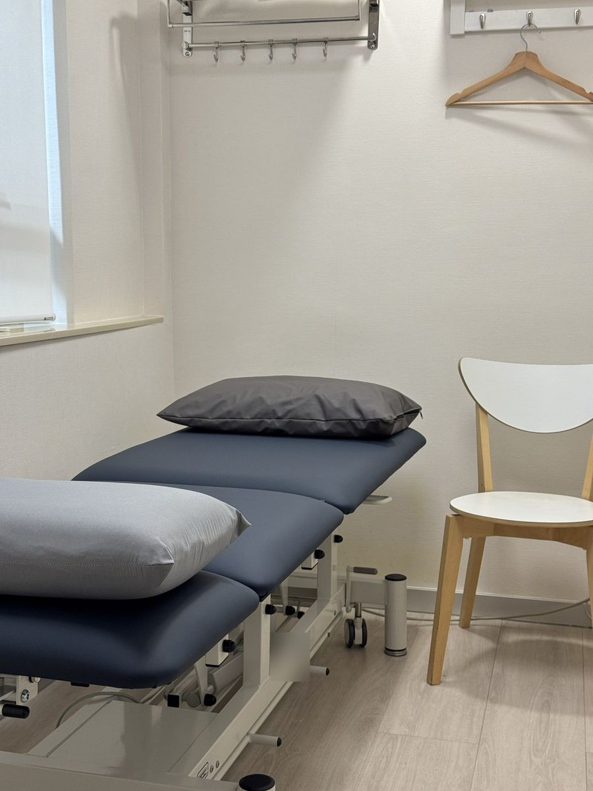
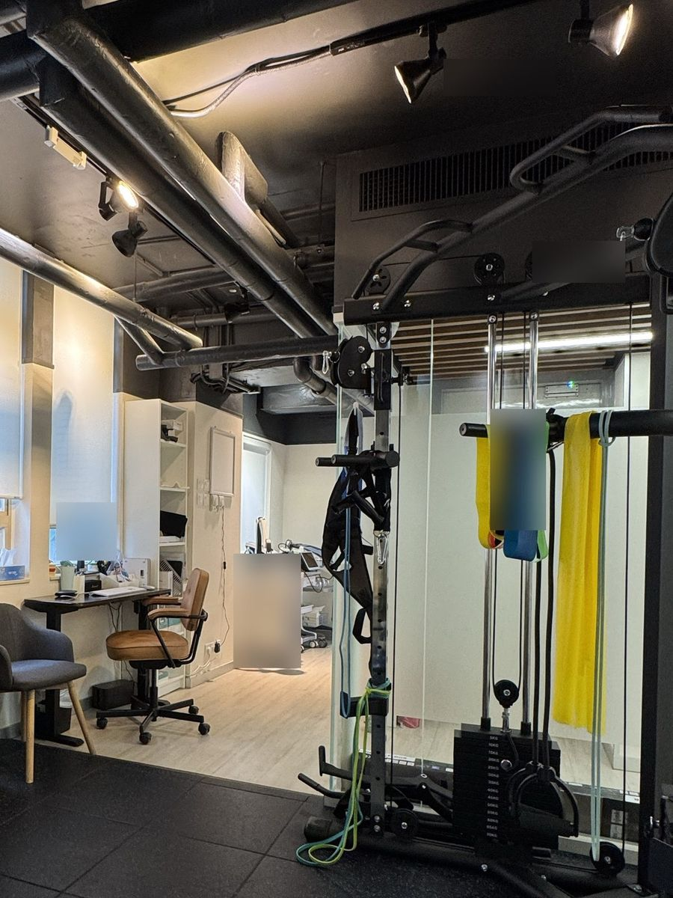
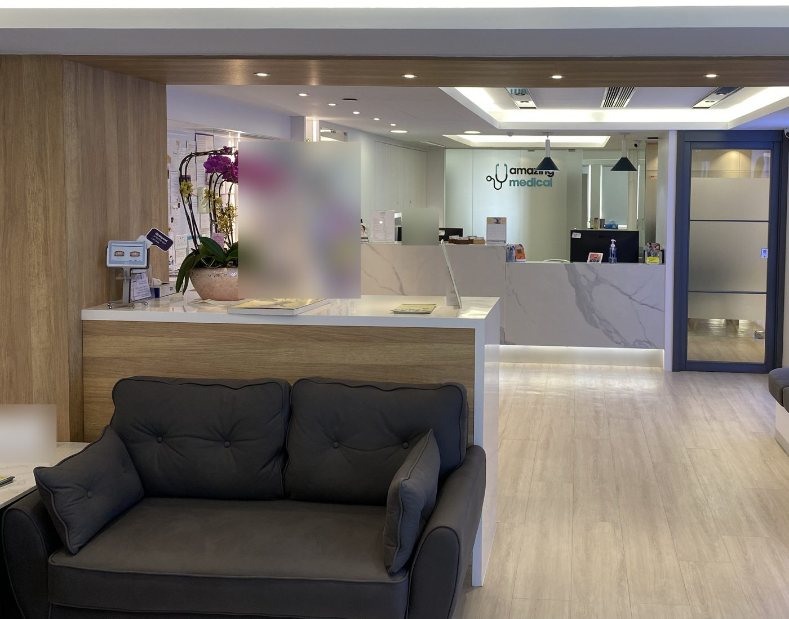
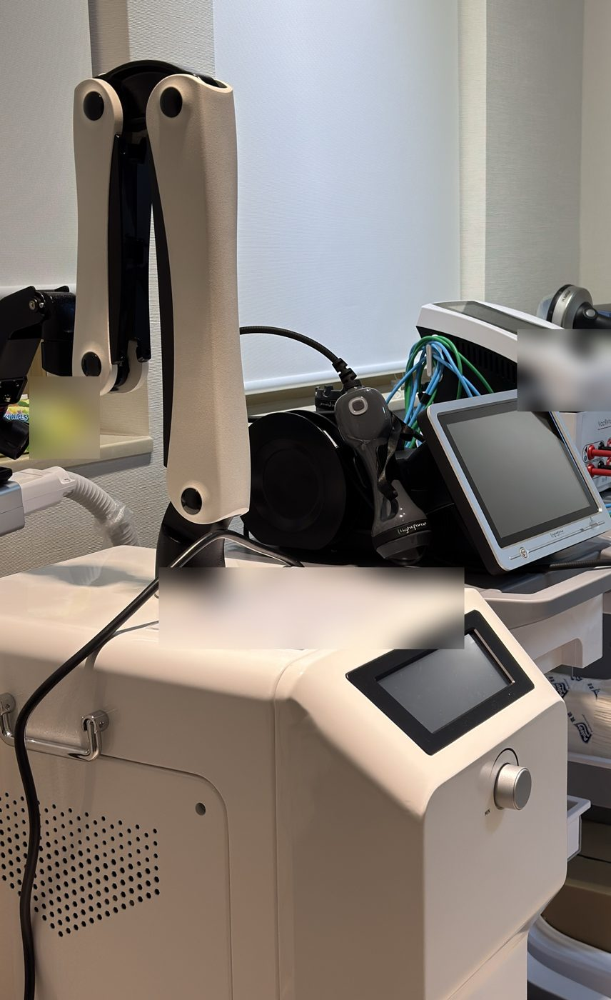
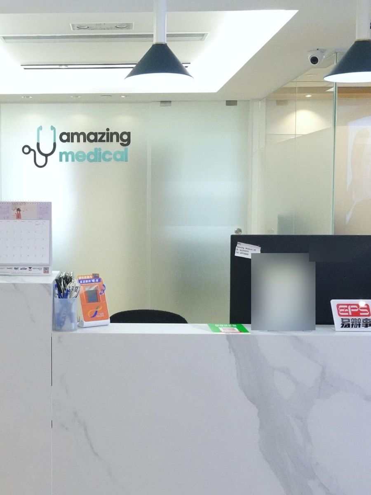

肩頸、腰背及關節痛
例如長時間坐著工作引起的痛楚、膝關節退化。
物理治療透過評估、運動訓練、手法治療及其他物理治療方法，幫助改善痛楚和活動能力。

例如長時間坐著工作引起的痛楚、膝關節退化。

例如扭傷、拉傷、行山或跑步後的膝蓋痛。
例如膝關節或髖關節置換手術後，以及韌帶手術後的康復訓練。
我會先評估你的痛楚和活動能力，再解釋原因，然後和你一起訂定運動及治療計劃。
45–60分鐘
了解病歷、進行檢查，並解釋評估結果及治療計劃。
HK$900
每節 45–60 分鐘。其他治療項目收費，歡迎 WhatsApp 查詢。
5天
星期二至六應診；星期日、一及公眾假期休息。
首次診症約 45–60 分鐘。
首次預約前，請以 WhatsApp 查詢你的情況是否需要醫生轉介信。如已有轉介信、診斷書或相關報告，請於首次診症時帶備。
物理治療每節 HK$900（45–60 分鐘）。其他治療項目收費，歡迎 WhatsApp 查詢。
可以。請以 WhatsApp 聯絡，並提供家人的大致情況（例如哪裡痛、是否剛做完手術）及方便的時間。如家人行動不便或需要輪椅，請預先告知。


